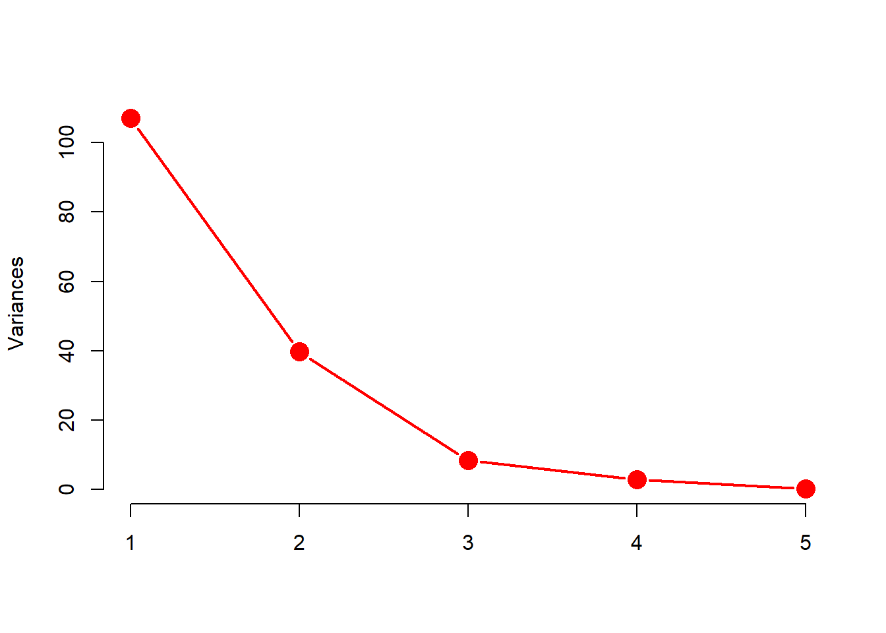
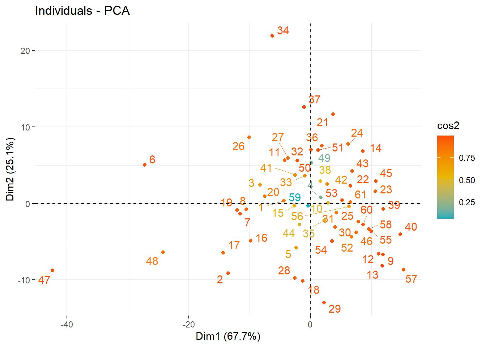
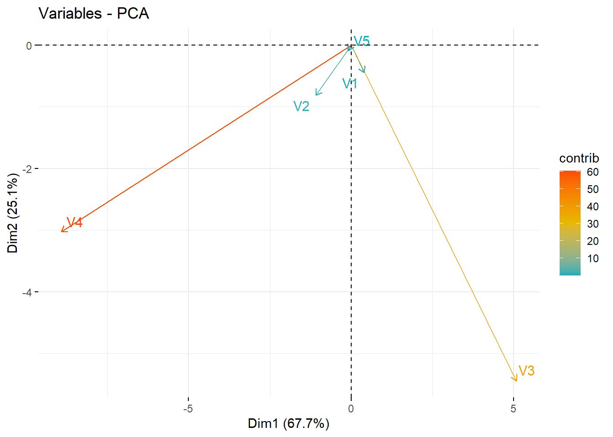
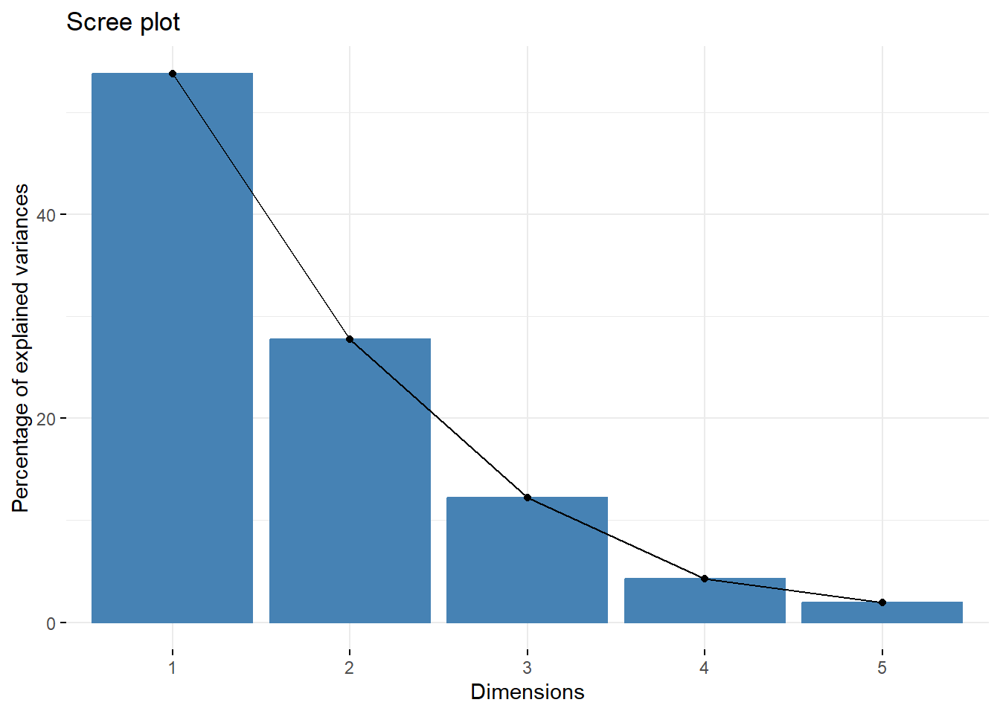

1 Chapter 8: Principle Component Analysis
1.1 Example 8.3, Exercise 8.11
A census provided information, by tract, on five socioeconomic variables for the Madison, Wisconsin, area.
- total population (thousands)
- professional degree (percent)
- employed age over 16 (percent)
- government employment (percent)
- median home value
X <- read.table("dataset/T8-5.dat",header=FALSE)
X
#> V1 V2 V3 V4 V5
#> 1 2.67 5.71 69.02 30.3 1.48
#> 2 2.25 4.37 72.98 43.3 1.44
#> 3 3.12 10.27 64.94 32.0 2.11
#> 4 5.14 7.44 71.29 24.5 1.85
#> 5 5.54 9.25 74.94 31.0 2.23
#> 6 5.04 4.84 53.61 48.2 1.60
#> 7 3.14 4.82 67.00 37.6 1.52
#> 8 2.43 2.40 67.20 36.8 1.40
#> 9 5.38 4.30 83.03 19.7 2.07
#> 10 7.34 2.73 72.60 24.5 1.42
#> 11 4.94 4.66 64.32 27.7 1.42
#> 12 4.82 4.26 82.64 20.3 1.46
#> 13 5.02 4.17 84.25 20.6 1.42
#> 14 3.37 1.00 69.93 16.4 1.17
#> 15 3.63 6.40 70.31 29.0 2.00
#> 16 7.43 6.00 70.53 37.7 1.44
#> 17 2.20 10.59 69.85 41.7 2.01
#> 18 7.16 4.71 79.44 33.0 1.55
#> 19 6.33 2.88 66.24 38.1 1.73
#> 20 2.57 1.85 67.25 33.4 1.18
#> 21 6.38 1.56 63.00 18.2 0.93
#> 22 5.34 3.41 72.57 20.1 1.66
#> 23 4.87 5.20 75.13 16.5 3.64
#> 24 2.04 4.83 67.78 17.4 1.49
#> 25 5.48 1.34 77.43 21.6 1.32
#> 26 7.77 5.32 58.57 31.2 3.21
#> 27 6.29 2.60 64.32 27.4 1.78
#> 28 6.38 3.71 78.61 34.1 1.30
#> 29 5.76 4.06 83.77 31.4 1.52
#> 30 6.03 3.10 76.04 25.0 1.08
#> 31 5.09 1.85 74.65 24.1 0.97
#> 32 4.36 1.67 65.43 23.7 1.07
#> 33 3.07 2.00 68.03 26.2 1.19
#> 34 1.82 1.13 49.50 21.9 1.62
#> 35 3.31 0.94 74.75 26.5 1.12
#> 36 3.45 0.72 65.99 22.0 1.20
#> 37 1.74 0.97 60.24 22.0 1.17
#> 38 1.81 1.54 70.05 24.4 1.00
#> 39 5.59 1.66 77.96 17.1 1.30
#> 40 3.72 1.69 82.40 16.3 1.52
#> 41 3.39 1.24 67.17 27.7 1.03
#> 42 2.25 2.80 70.81 23.4 1.14
#> 43 3.31 1.30 71.30 19.2 1.21
#> 44 5.27 1.20 73.08 30.3 1.35
#> 45 3.26 1.02 74.36 16.5 1.23
#> 46 6.76 1.53 78.37 22.6 1.33
#> 47 2.92 4.42 58.50 68.5 2.25
#> 48 1.64 16.70 64.61 49.4 3.13
#> 49 1.36 14.26 66.42 22.5 2.80
#> 50 3.58 3.38 65.57 26.1 1.31
#> 51 3.38 2.17 66.10 22.6 1.44
#> 52 7.25 1.16 78.52 23.6 1.50
#> 53 5.44 2.93 73.59 22.3 1.65
#> 54 5.83 4.47 77.33 26.2 2.16
#> 55 3.74 2.26 79.70 20.2 1.58
#> 56 9.21 2.36 74.58 21.8 1.72
#> 57 2.14 6.30 86.54 17.4 2.80
#> 58 6.62 4.79 78.84 20.0 2.33
#> 59 4.24 5.82 71.39 27.1 1.69
#> 60 4.72 4.71 78.01 20.6 1.55
#> 61 6.48 4.93 74.23 20.9 1.98
# The function princomp() uses the spectral decomposition approach.
# The functions prcomp() use the singular value decomposition (SVD).
X.pc <- prcomp(X)
summary(X.pc)
#> Importance of components:
#> PC1 PC2 PC3 PC4
#> Standard deviation 10.345 6.2986 2.89324 1.69348
#> Proportion of Variance 0.677 0.2510 0.05295 0.01814
#> Cumulative Proportion 0.677 0.9279 0.98088 0.99902
#> PC5
#> Standard deviation 0.39331
#> Proportion of Variance 0.00098
#> Cumulative Proportion 1.00000
# The rotation shows the estimated eigenvector loadings
X.pc$rotation
#> PC1 PC2 PC3 PC4
#> V1 0.038887287 -0.07114494 0.18789258 0.97713524
#> V2 -0.105321969 -0.12975236 -0.96099580 0.17135181
#> V3 0.492363944 -0.86438807 0.04579737 -0.09104368
#> V4 -0.863069865 -0.48033178 0.15318538 -0.02968577
#> V5 -0.009122262 -0.01474342 -0.12498114 0.08170118
#> PC5
#> V1 -0.057699864
#> V2 -0.138554092
#> V3 0.004966048
#> V4 0.006691800
#> V5 0.988637470
screeplot(X.pc, col = "red", pch = 16,
type = "lines", cex = 2, lwd = 2, main = "")
# Another useful graphical method to help interpret the first two principal components is called the biplot.
# Biplots are a graphical method for simultaneously displaying the variables and sample units described by a multivariate data matrix.
biplot(X.pc, col = c(2, 3), cex = c(.75, 1.5),
xlim = c( -.45, .45),
xlab = "First principal component",
ylab = "Second principal component",
main = "Biplot")
# use the factoextra package to create a ggplot2-based elegant visualization.
# (1) Visualize eigenvalues (scree plot). Show the percentage of variances explained by each principal component.
library(factoextra)
#> Loading required package: ggplot2
#> Welcome! Want to learn more? See two factoextra-related books at https://goo.gl/ve3WBa
fviz_eig(X.pc)
# (2) Graph of individuals. Individuals with a similar profile are grouped together.
fviz_pca_ind(X.pc,
col.ind = "cos2", # Color by the quality of representation
gradient.cols = c("#00AFBB", "#E7B800", "#FC4E07"),
repel = TRUE # Avoid text overlapping
)
## The quality of representation shows the importance of a principal component for a given observation
## Some details about computing cos2: the quality of representation
# a. Coordinates of individuals on the principal components
ind.coord <- X.pc$x
ind.coord
#> PC1 PC2 PC3 PC4
#> [1,] -4.35590788 0.35186425 -1.58945113 -1.35312421
#> [2,] -13.50089124 -9.11108690 1.79713519 -2.74284848
#> [3,] -8.30048747 2.42902922 -5.89221657 0.24041504
#> [4,] 1.67803285 0.76997301 -3.61863740 1.35257624
#> [5,] -2.31333719 -5.77611226 -4.16751019 1.55935662
#> [6,] -27.20948854 5.01664733 1.71320375 1.69502211
#> [7,] -11.53924438 -1.32704212 0.37488801 -1.07590362
#> [8,] -10.52195183 -0.74937149 2.46870301 -2.18860529
#> [9,] 11.93915794 -6.68524631 -0.78114090 0.14065720
#> [10,] 2.90857069 0.09857903 1.43475296 2.54080801
#> [11,] -4.22662722 5.63897636 -0.75992016 1.18523960
#> [12,] 11.21729466 -6.58230929 -0.69763216 -0.44553475
#> [13,] 11.76870098 -8.12003515 -0.44887539 -0.42428346
#> [14,] 8.61492991 6.80778546 1.01950682 -1.17174146
#> [15,] -2.63885151 -0.30425990 -2.27721394 -0.33321186
#> [16,] -9.84423032 -4.88350530 0.23395391 2.98731285
#> [17,] -14.32332530 -6.44892755 -4.64933497 -1.34686336
#> [18,] -1.27647689 -10.14267573 1.09724286 1.83975359
#> [19,] -12.01851652 -0.88860200 2.85413785 1.78024283
#> [20,] -7.49751789 0.90518422 2.53251108 -2.06764467
#> [21,] 3.70958180 11.65012840 1.03525923 2.42328264
#> [22,] 6.53972433 2.28849038 -0.29989444 0.85601375
#> [23,] 10.68236211 1.57684077 -2.79007521 0.73904522
#> [24,] 6.23525521 7.77884139 -2.89627716 -1.62285138
#> [25,] 7.86457056 -2.36929347 2.21051873 0.12333510
#> [26,] -10.05425476 8.61467906 -0.81334367 4.62947057
#> [27,] -3.70152919 5.94901244 1.38243735 2.18970560
#> [28,] -2.55724536 -9.76466732 2.07341983 0.92872290
#> [29,] 2.25066152 -12.93256096 1.41579595 0.01121266
#> [30,] 4.08395782 -3.06487755 1.10967447 0.96834948
#> [31,] 4.27243668 -1.20039106 1.94652293 -0.02006664
#> [32,] 0.06772707 7.03521654 1.48631653 0.09524844
#> [33,] -0.89581686 3.63416759 1.41384538 -1.40983377
#> [34,] -6.26902189 21.91218124 0.45398163 -0.93050925
#> [35,] 2.27556068 -2.19712502 2.84005779 -1.98339256
#> [36,] 1.87415219 7.55381324 1.97726412 -0.94662635
#> [37,] -1.04949457 12.61370671 1.15613339 -2.05363955
#> [38,] 1.65346742 2.90483086 1.45968221 -2.86584307
#> [39,] 11.98009486 -0.71497795 1.26110626 0.36935136
#> [40,] 14.77876088 -4.04269064 0.93421343 -1.81526203
#> [41,] -2.51990646 3.73524802 2.41471713 -1.20668116
#> [42,] 2.77386149 2.53137189 0.19562350 -2.24806954
#> [43,] 6.83857818 4.24339807 1.20659676 -1.38354598
#> [44,] -1.77961535 -2.75542840 3.43534553 0.03437226
#> [45,] 10.70286382 2.93485943 1.19032076 -1.67718929
#> [46,] 7.49399613 -3.77801594 2.46341714 1.29217524
#> [47,] -42.36628241 -8.76520545 4.97086441 -1.44319135
#> [48,] -24.22446138 -6.38754714 -9.82666882 -0.50710578
#> [49,] 0.13240425 5.31021704 -11.53099879 -0.59200525
#> [50,] -2.14733165 5.59148404 0.04051858 -0.43828914
#> [51,] 1.25284200 6.98383229 0.63762120 -0.77478367
#> [52,] 6.76125397 -4.37736497 3.04986115 1.67811821
#> [53,] 5.19771634 0.40539870 0.56514378 0.71248814
#> [54,] 3.52150287 -4.93579093 -0.13654685 0.94284241
#> [55,] 10.02360265 -3.65840314 0.85647490 -1.56310331
#> [56,] 6.32269161 -0.40546923 1.78126446 4.22904619
#> [57,] 15.30911808 -8.65424313 -3.59471831 -2.87420152
#> [58,] 9.61147274 -3.36319151 -1.19747251 1.83007687
#> [59,] -0.37962981 -0.28874022 -1.80806881 0.09620502
#> [60,] 8.62662402 -2.77689303 -1.32620405 -0.04616036
#> [61,] 6.54791557 0.18629405 -1.38783253 2.08166593
#> PC5
#> [1,] -0.281419035
#> [2,] -0.004409154
#> [3,] -0.325234441
#> [4,] -0.325379930
#> [5,] -0.161937766
#> [6,] -0.135732724
#> [7,] -0.106860604
#> [8,] 0.146410475
#> [9,] 0.339512953
#> [10,] -0.218338448
#> [11,] -0.366973284
#> [12,] -0.223623495
#> [13,] -0.252236221
#> [14,] -0.064193706
#> [15,] 0.079385117
#> [16,] -0.578778520
#> [17,] -0.326057864
#> [18,] -0.262918633
#> [19,] 0.185057340
#> [20,] -0.025466818
#> [21,] -0.575103051
#> [22,] 0.010524588
#> [23,] 1.735756491
#> [24,] -0.205736270
#> [25,] -0.012710470
#> [26,] 1.142817998
#> [27,] 0.194455278
#> [28,] -0.323278854
#> [29,] -0.110941682
#> [30,] -0.509724275
#> [31,] -0.403969336
#> [32,] -0.286508631
#> [33,] -0.109520935
#> [34,] 0.387464462
#> [35,] -0.010326808
#> [36,] 0.017552430
#> [37,] 0.023366776
#> [38,] -0.162939168
#> [39,] -0.110648611
#> [40,] 0.227289567
#> [41,] -0.175098878
#> [42,] -0.227413622
#> [43,] -0.037211916
#> [44,] 0.085079555
#> [45,] 0.021369217
#> [46,] -0.091645314
#> [47,] 0.847525584
#> [48,] -0.007532702
#> [49,] -0.150576006
#> [50,] -0.224401674
#> [51,] 0.062522325
#> [52,] 0.106851844
#> [53,] 0.081161521
#> [54,] 0.394161422
#> [55,] 0.219167679
#> [56,] 0.013383974
#> [57,] 0.973097369
#> [58,] 0.438319159
#> [59,] -0.189279132
#> [60,] -0.212210738
#> [61,] 0.064105593
# b. Calculate the square distance between each individual and the PCA center of gravity
n <- nrow(X)
d2 <- rowSums(ind.coord^2)
cos2 <- round(apply(ind.coord, 2, function(x) x^2/d2), 2)
cos2
#> PC1 PC2 PC3 PC4 PC5
#> [1,] 0.81 0.01 0.11 0.08 0.00
#> [2,] 0.66 0.30 0.01 0.03 0.00
#> [3,] 0.63 0.05 0.32 0.00 0.00
#> [4,] 0.15 0.03 0.71 0.10 0.01
#> [5,] 0.09 0.57 0.30 0.04 0.00
#> [6,] 0.96 0.03 0.00 0.00 0.00
#> [7,] 0.98 0.01 0.00 0.01 0.00
#> [8,] 0.91 0.00 0.05 0.04 0.00
#> [9,] 0.76 0.24 0.00 0.00 0.00
#> [10,] 0.50 0.00 0.12 0.38 0.00
#> [11,] 0.35 0.61 0.01 0.03 0.00
#> [12,] 0.74 0.26 0.00 0.00 0.00
#> [13,] 0.68 0.32 0.00 0.00 0.00
#> [14,] 0.60 0.38 0.01 0.01 0.00
#> [15,] 0.56 0.01 0.42 0.01 0.00
#> [16,] 0.75 0.18 0.00 0.07 0.00
#> [17,] 0.76 0.15 0.08 0.01 0.00
#> [18,] 0.01 0.94 0.01 0.03 0.00
#> [19,] 0.92 0.01 0.05 0.02 0.00
#> [20,] 0.83 0.01 0.09 0.06 0.00
#> [21,] 0.09 0.87 0.01 0.04 0.00
#> [22,] 0.88 0.11 0.00 0.02 0.00
#> [23,] 0.89 0.02 0.06 0.00 0.02
#> [24,] 0.35 0.55 0.08 0.02 0.00
#> [25,] 0.85 0.08 0.07 0.00 0.00
#> [26,] 0.51 0.37 0.00 0.11 0.01
#> [27,] 0.25 0.63 0.03 0.09 0.00
#> [28,] 0.06 0.89 0.04 0.01 0.00
#> [29,] 0.03 0.96 0.01 0.00 0.00
#> [30,] 0.59 0.33 0.04 0.03 0.01
#> [31,] 0.77 0.06 0.16 0.00 0.01
#> [32,] 0.00 0.96 0.04 0.00 0.00
#> [33,] 0.04 0.73 0.11 0.11 0.00
#> [34,] 0.08 0.92 0.00 0.00 0.00
#> [35,] 0.24 0.22 0.37 0.18 0.00
#> [36,] 0.05 0.87 0.06 0.01 0.00
#> [37,] 0.01 0.96 0.01 0.03 0.00
#> [38,] 0.13 0.39 0.10 0.38 0.00
#> [39,] 0.98 0.00 0.01 0.00 0.00
#> [40,] 0.91 0.07 0.00 0.01 0.00
#> [41,] 0.23 0.51 0.21 0.05 0.00
#> [42,] 0.40 0.33 0.00 0.26 0.00
#> [43,] 0.69 0.26 0.02 0.03 0.00
#> [44,] 0.14 0.34 0.52 0.00 0.00
#> [45,] 0.90 0.07 0.01 0.02 0.00
#> [46,] 0.72 0.18 0.08 0.02 0.00
#> [47,] 0.95 0.04 0.01 0.00 0.00
#> [48,] 0.81 0.06 0.13 0.00 0.00
#> [49,] 0.00 0.17 0.82 0.00 0.00
#> [50,] 0.13 0.87 0.00 0.01 0.00
#> [51,] 0.03 0.95 0.01 0.01 0.00
#> [52,] 0.59 0.25 0.12 0.04 0.00
#> [53,] 0.96 0.01 0.01 0.02 0.00
#> [54,] 0.33 0.64 0.00 0.02 0.00
#> [55,] 0.86 0.11 0.01 0.02 0.00
#> [56,] 0.65 0.00 0.05 0.29 0.00
#> [57,] 0.71 0.23 0.04 0.02 0.00
#> [58,] 0.85 0.10 0.01 0.03 0.00
#> [59,] 0.04 0.02 0.92 0.00 0.01
#> [60,] 0.89 0.09 0.02 0.00 0.00
#> [61,] 0.87 0.00 0.04 0.09 0.00
rowSums(cos2[,1:2])
#> [1] 0.82 0.96 0.68 0.18 0.66 0.99 0.99 0.91 1.00 0.50 0.96
#> [12] 1.00 1.00 0.98 0.57 0.93 0.91 0.95 0.93 0.84 0.96 0.99
#> [23] 0.91 0.90 0.93 0.88 0.88 0.95 0.99 0.92 0.83 0.96 0.77
#> [34] 1.00 0.46 0.92 0.97 0.52 0.98 0.98 0.74 0.73 0.95 0.48
#> [45] 0.97 0.90 0.99 0.87 0.17 1.00 0.98 0.84 0.97 0.97 0.97
#> [56] 0.65 0.94 0.95 0.06 0.98 0.87
# (3) Graph of variables. Positive correlated variables point to the same side of the plot. Negative correlated variables point to opposite sides of the graph.
fviz_pca_var(X.pc,
col.var = "contrib", # Color by contributions to the PC
gradient.cols = c("#00AFBB", "#E7B800", "#FC4E07"),
repel = TRUE # Avoid text overlapping
)
# (4) Biplot of individuals and variables
fviz_pca_biplot(X.pc,
repel = TRUE,
col.var = "#2E9FDF", # Variables color
col.ind = "#696969" # Individuals color
)
1.2 Example 8.10, Example 8.11
X <- read.table("dataset/T8-2.dat",header=FALSE)
X
#> V1 V2 V3 V4 V5
#> 1 2044.9 588.2 425.8 -189.1 -209.8
#> 2 -2143.7 -686.2 883.6 -565.9 -441.5
#> 3 -177.8 -464.6 707.5 736.3 38.2
#> 4 -2186.2 450.5 -184.0 443.7 -325.3
#> 5 -878.6 -545.8 115.7 296.4 437.5
#> 6 563.2 -1045.4 281.2 620.5 142.7
#> 7 403.1 66.8 340.6 -135.5 521.2
#> 8 -1988.9 -801.8 -1437.3 -148.8 61.6
#> 9 132.8 563.7 125.3 68.2 611.5
#> 10 -2787.3 -213.4 7.8 169.4 -202.3
#> 11 283.4 3936.9 -0.9 276.2 -159.6
#> 12 761.6 256.0 -2153.6 -418.8 28.2
#> 13 -498.3 244.7 966.5 -1142.3 182.6
#> 14 2366.2 -1193.7 -165.5 270.6 -344.9
#> 15 1917.8 -782.0 -82.9 -196.8 -89.9
#> 16 2187.7 -373.9 170.1 -84.1 -250.2
n <- nrow(X)
p <- ncol(X)
X.pc <- prcomp(X)
# values of the principal components
Y <- X.pc$x
Y
#> PC1 PC2 PC3 PC4
#> [1,] -2044.9108 -588.18998 425.8014318 -189.11860
#> [2,] 2143.6969 686.18028 883.6071505 -565.91372
#> [3,] 177.7921 464.60169 707.5038436 736.30458
#> [4,] 2186.1878 -450.51761 -183.9938258 443.69157
#> [5,] 878.5975 545.80132 115.7107748 296.42832
#> [6,] -563.2024 1045.40708 281.2031894 620.50453
#> [7,] -403.1044 -66.79005 340.6113523 -135.47071
#> [8,] 1988.9026 801.78641 -1437.2896124 -148.79412
#> [9,] -132.8076 -563.69033 125.3126666 68.23589
#> [10,] 2787.2934 213.38002 7.8088146 169.40070
#> [11,] -283.4329 -3936.89991 -0.8923354 276.19734
#> [12,] -761.6016 -255.99816 -2153.5931791 -418.80896
#> [13,] 498.2963 -244.70169 966.5134292 -1142.28340
#> [14,] -2366.2012 1193.71037 -165.5042865 270.56662
#> [15,] -1917.8007 782.01030 -82.8986585 -196.81567
#> [16,] -2187.7050 373.91026 170.0992449 -84.12436
#> PC5
#> [1,] 209.77628
#> [2,] 441.49580
#> [3,] -38.14340
#> [4,] 325.32683
#> [5,] -437.47036
#> [6,] -142.64953
#> [7,] -521.20697
#> [8,] -61.60321
#> [9,] -611.50329
#> [10,] 202.32507
#> [11,] 159.55944
#> [12,] -28.25294
#> [13,] -182.65658
#> [14,] 344.92000
#> [15,] 89.89036
#> [16,] 250.19249
library(factoextra)
fviz_eig(X.pc)
# covariance matrix of first two sample PCs: y1 and y2
Y12 <- Y[, 1:2]
S <- diag(as.vector(X.pc$sdev^2)[1:2])
S
#> [,1] [,2]
#> [1,] 2770248 0
#> [2,] 0 1429193
## Two-part procedure
# (i) ellipse format chart for the first two PCs (y1, y2)
library(car)
#> Loading required package: carData
alpha <- 0.05
radius <- sqrt(qchisq(1-alpha, df = 2))
par(pty = "s")
plot(0, xlim=c(-5000, 5000), ylim=c(-4000, 4000),
xlab = expression(hat(y)[1]), ylab = expression(hat(y)[2]), type="n")
ellipse(center = colMeans(Y12), shape = S, radius = radius)
points(Y12[, 1], Y12[, 2])
# (ii) T^2 chart for the last p-2 PCs
T2 <- Y[, 3]^2/X.pc$sdev[3]^2 +
Y[, 4]^2/X.pc$sdev[4]^2 +
Y[, 5]^2/X.pc$sdev[5]^2
UCL <- qchisq(1-alpha, df = p - 2)
plot(1:n, T2, ylim = range(T2, UCL*1.05), type = 'p',
xlab = "Period", ylab = expression(T^2),
main = expression(paste(T^2,"-chart")))
abline(h = UCL, lty = 1, col = "red")
lines(1:n, T2)
1.3 Homework
1.3.1 Exercise 8.1, 8.2
Sigma <- matrix(c(5, 2,
2, 2), nrow = 2, byrow = T)
eigen(Sigma)
#> eigen() decomposition
#> $values
#> [1] 6 1
#>
#> $vectors
#> [,1] [,2]
#> [1,] -0.8944272 0.4472136
#> [2,] -0.4472136 -0.8944272
V <- diag(diag(Sigma))
rho <- sqrt(solve(V)) %*% Sigma %*% sqrt(solve(V))
eigen(rho)
#> eigen() decomposition
#> $values
#> [1] 1.6324555 0.3675445
#>
#> $vectors
#> [,1] [,2]
#> [1,] 0.7071068 -0.7071068
#> [2,] 0.7071068 0.7071068
# the correlation coefficients between the PC Y_i and the standardized variable Z_k
# Y_i, Z_k
i <- 1
k <- 1
ed <- eigen(rho)
ed$vector[k, i] * sqrt(ed$values[i])
#> [1] 0.90345321.3.2 Exercise 8.22
library(factoextra)
mydata <- read.table("dataset/T1-10.dat",header=FALSE)
X <- mydata[, 3:9]
n <- nrow(X)
p <- ncol(X)
# use covariance matrix
X.pc <- prcomp(X)
# proportion of variance
round(X.pc$sdev^2/sum(X.pc$sdev^2),4)
#> [1] 0.8082 0.1914 0.0002 0.0001 0.0000 0.0000 0.0000
fviz_eig(X.pc)
# use correlation matrix
Z.pc <- prcomp(X, scale = T)
# proportion of variance
round(Z.pc$sdev^2/sum(Z.pc$sdev^2),4)
#> [1] 0.5887 0.1910 0.1059 0.0602 0.0265 0.0209 0.0067
fviz_eig(Z.pc)


1.4 Reference
[1] Johnson, R. A., and Wichern, D. W. (2007). Applied multivariate statistical analysis (6th ed.). Upper Saddle River, N.J.: Pearson Prentice Hall.
[2] Zelterman, D. (2015). Applied Multivariate Statistics with R (1st ed.).
[3] Principal Component Analysis in R: prcomp vs princomp, http://www.sthda.com/english/articles/31-principal-component-methods-in-r-practical-guide/118-principal-component-analysis-in-r-prcomp-vs-princomp/